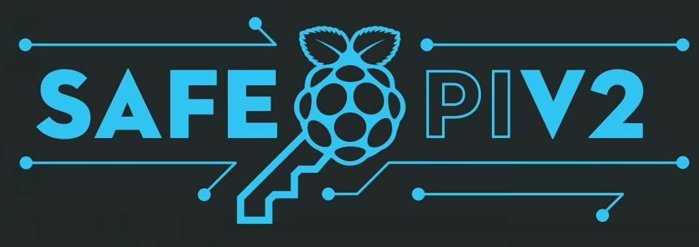
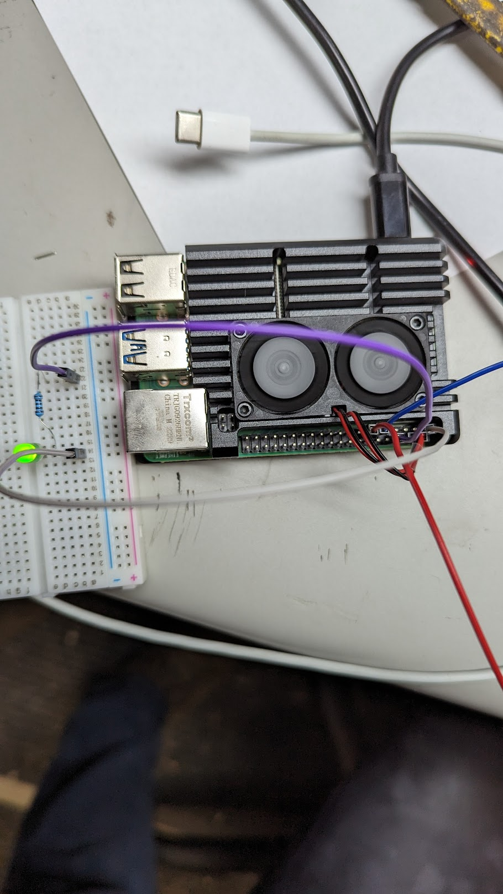
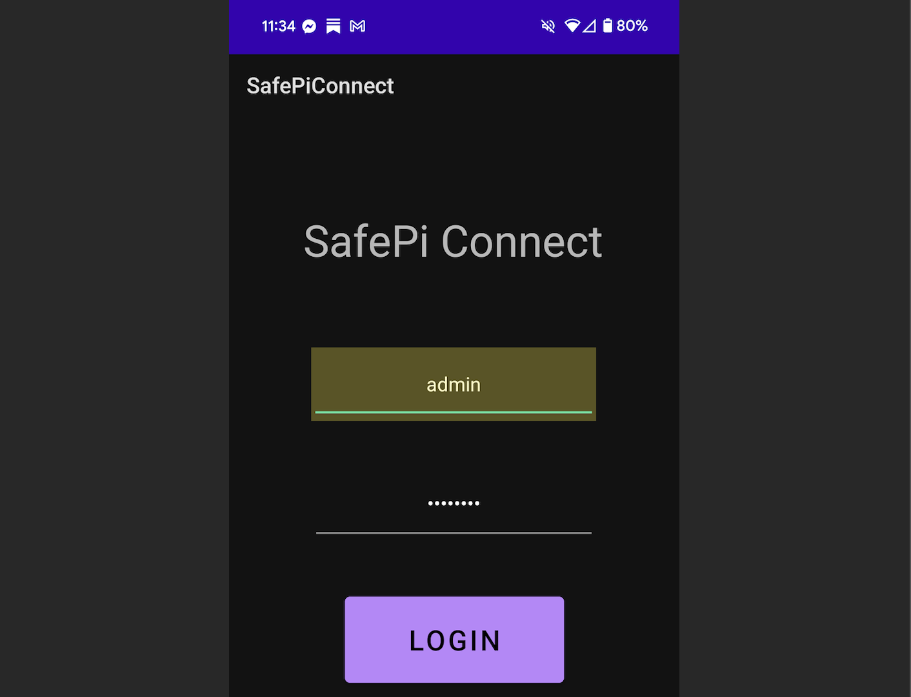

Secure IoT
SafePi
SafePi is a secure home security IoT device built as a CSUMB Computer Science capstone with Joseph Carey, Tomas Diaz Wahl, and Liam Cristescu. The system combined a Node.js server, OAuth2, an Android app, Bluetooth Low Energy provisioning in Kotlin, Wi-Fi sign-in, and a Raspberry Pi 4B running embedded Linux. The project received the CS Faculty Choice Award.
GitHub

